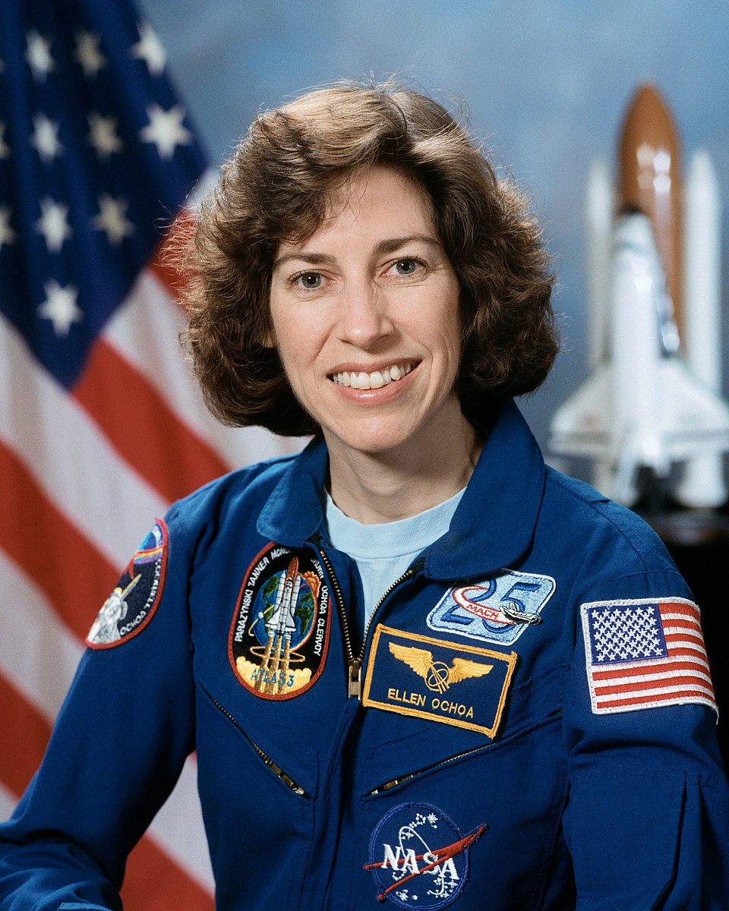
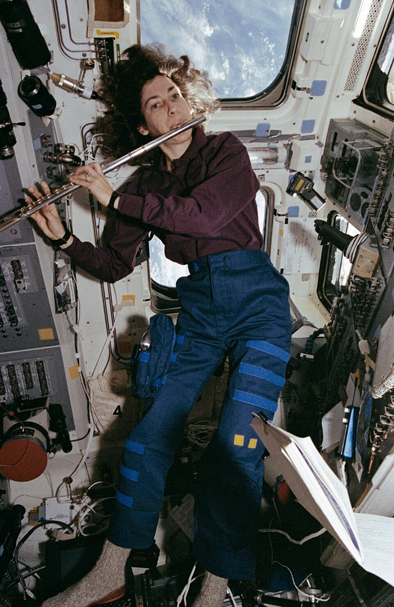
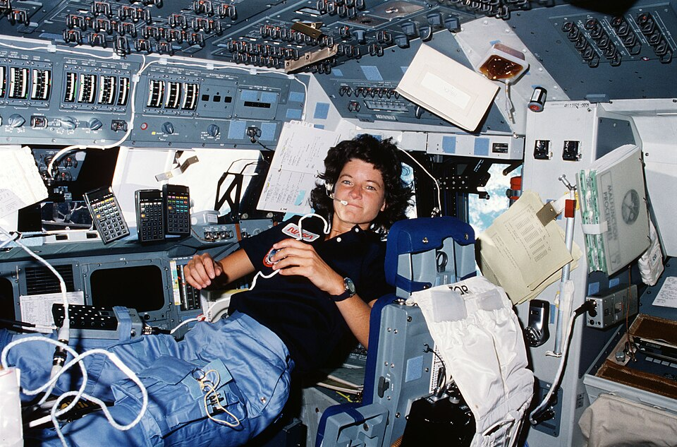
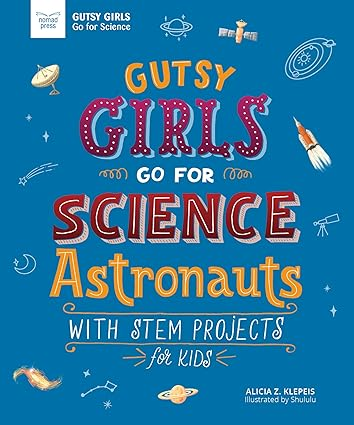
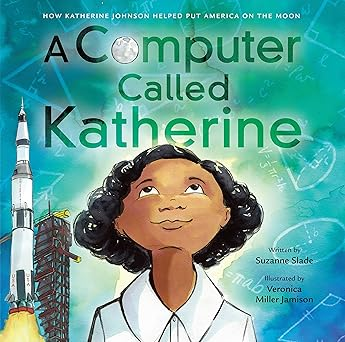
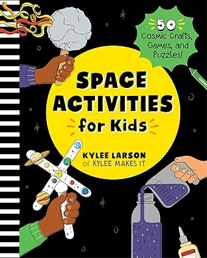
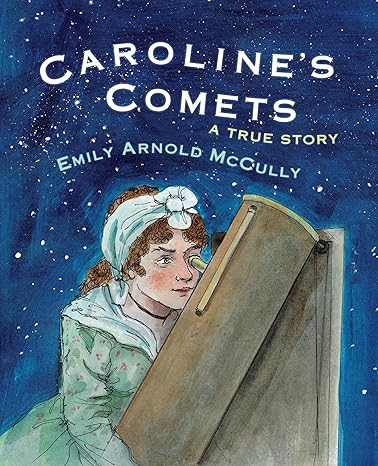

Front Row Space Adventure
Women in Space
Greetings, future astronauts, space explorers, scientists, and mathematicians! Meet a few remarkable women who have made remarkable advancements in our understanding of what’s out there beyond Earth. Each of these heroes have started off as a beginner, and through hard work, perseverance and a passion for astronomy they have made incredible achievements. Before we start, check out this video below just a few of the incredible women that have made significant contributions and historical breakthroughs before astronauts ever step foot onto the space shuttle. Scientists, mathematicians, astronomers, and engineers work tirelessly behind the scenes to ensure the success of a mission!
Mae Jemison
Born October 17, 1956 in Decatur, Alabama, she calls Chicago, Illinois her hometown. Dr. Mae Jemison was the first Black woman in space in 1992. In 1987, NASA selected her (along with fifteen astronaut candidates) for the Space Shuttle program that resumed after the Challenger explosion a year prior. She was aboard the Space Shuttle Endeavor with six other astronauts where she conducted several experiments like bone cell research, and motion sickness in space.

Quick Facts
- In September 1992 Jemison was on her first space flight aboard the Endeavor. The mission lasted 8 days and orbited the earth 127 times!
- Did you know? Before becoming an astronaut, Dr. Jemison had received her Doctorate in Medicine, and was working as a doctor in Los Angeles, California before joining the Peace Corps at the age of 27 where she was a Medical Officer in Sierra Leone and Liberia. While studying medicine at Cornell University she had traveled to Cuba and Thailand in part of her medical training. She also continued her passion for dance throughout her studies and enrolled into classes with Alvin Ailey American Dance Theater!
- Dr. Jemison was the first real-life astronaut to appear in an episode of Star Trek in 1993 called "Second Chances." She played the character, Lieutenant Palmer. Jemison has been a long time fan of the show! The actress Nichelle Nichols' role as Uhura inspired a young Mae Jemison to pursue a career in space exploration.

See this quick sheet of Mae Jemison's education, career achievements, and more!
Ellen Ochoa
Born on May 10, 1958 in Los Angeles, California. In 1991, Ellen became the first Hispanic woman to travel into space. She completed four flights and has spent more than 950 hours onboard a space shuttle in missions! Ochoa conducted research in solar activity and its effects on Earth's climate and atmosphere. Ochoa was the 11th Director (and second woman) of the Lyndon B. Johnson Center in Houston, Texas from 2012-2018.

Quick Facts
- Dr. Ochoa co-invented three patents including one for hologram technology.
- Ellen Ochoa has received a lot of recognition for her work with NASA. She has received the Distinguished Service Medal, Outstanding Leadership Medal, among several other awards.
- To become an astronaut you need to get your bachelor's and master's degrees in a STEM (science, technology, engineering and mathematics) field. Many, like Dr. Ochoa spend years to get their PhD! Ellen Ochoa went to college to get her Bachelor's of Science degree in Physics (1980), and went on to study at Stanford University to receive her master's degree in 1981, and later her Doctorate in Electrical Engineering in 1985.

Ochoa is a classical flutist!
See this quick sheet of Ellen Ochoa's education, career achievements, and more!
Sally Ride

Quick Facts
- Extra, extra, read all about it! Through a newspaper advertisement, Sally first learned about job openings at NASA. Out of 8,000 applicants, Sally was selected along with 34 others.
- On June 18, 1983 Sally Ride became the first American woman to fly into space onboard the second mission of the Space Shuttle Challenger . At 32 years old, she was also the youngest American to be in space. Notably, twenty years earlier, the first woman in space was Valentina Tereshkova, a young Russian who embarked on a solo mission orbiting the Earth 48 times in nearly three days!
- Ride is recognized as the first acknowledged gay astronaut in space. Upon her death in 2012 from pancreatic cancer, of which she did not share publicly, her obituary shared that she was survived by Tam O'Shaughnessy, her partner of 27 years. Together, Sally and Tam had been childhood friends, and co-founders of Sally Ride Science, a non-profit intiative that offers STEM programs for K-12 students.

See this quick sheet of Sally Ride's education, career achievements, and more!
Parents, educators and eager readers, see below for some more great resources to inspire young women interested in STEM!
- National Institute of Health STEM Teaching Resources
- NASA Learning Resources for Educators
- Oak Ridge Institute for Science and Education STEM Lesson Plans for K-12 Teachers
- Ellen Ochoa Trading Card Lesson and Activity Grades 6-12 compiled by the United States Patent and Trademark Office
|
 |
 |
|
 |
 |
Check out a comprehensive list of over 100 women astronauts from around the world and a directory of women who made significant contributions at NASA.
Copyright 2026 by Daniela Franceschetti, Joanne Guerra, Katie Iwagami, and Sam Schlinkert. All Rights Reserved.